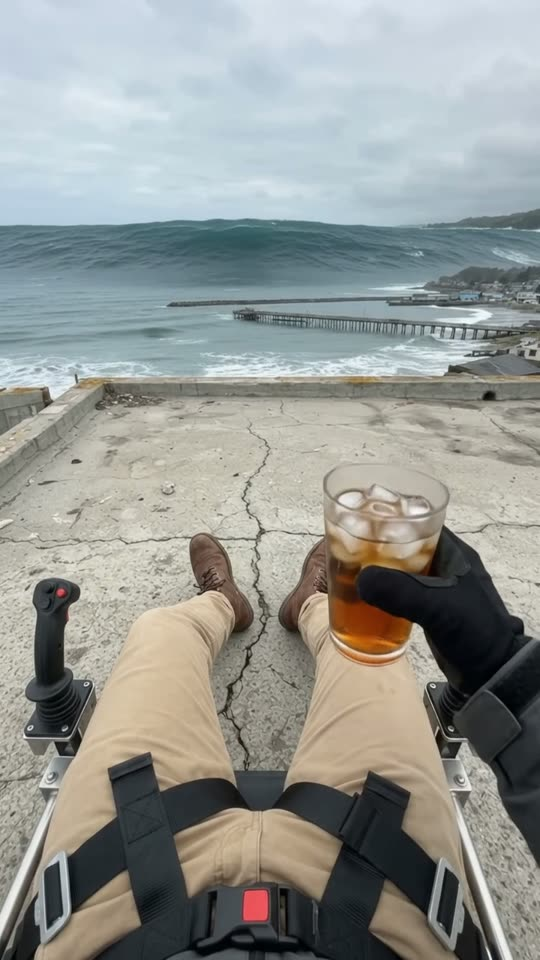
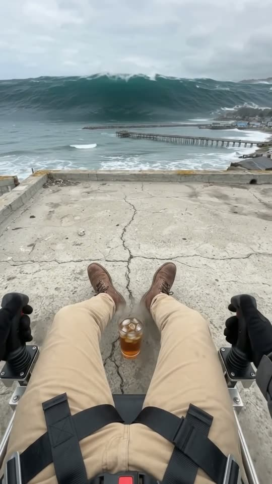
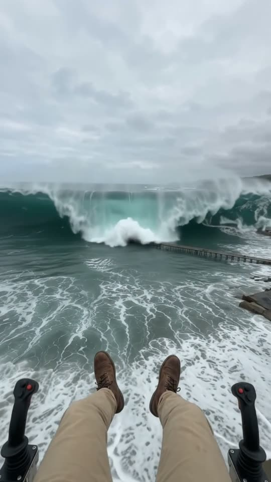
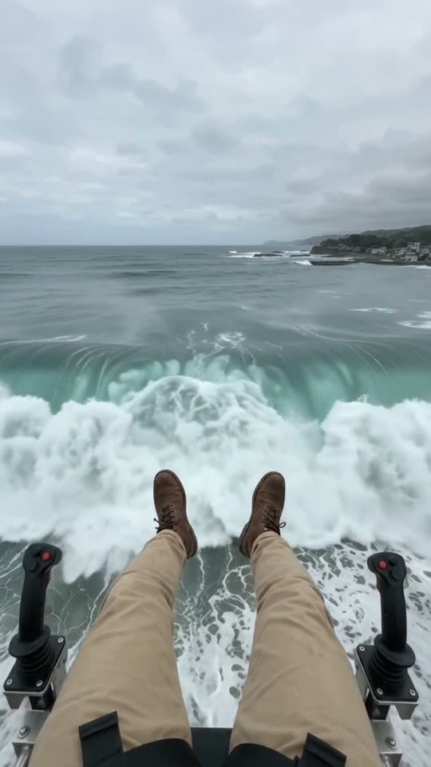

Free prompt pack
One iced tea.One tsunami.
You are sitting in a jetpack harness on a seaside roof, iced tea in hand, while a wall of water taller than the town rushes in. Glass down, hands on the grips, straight up, and the crest curls right over you before it passes underneath. One still image and one prompt, in one take.
Both prompts, in the order I ran them. Press the grips left, right, left to lift each roof off. Tap the sea for spray.
The first frame
Boots on the concrete, glass in hand. This image is frame one: first person in a jetpack harness on a seaside roof, iced tea in one hand, a control grip by each thigh, and a tsunami filling the horizon.
Watch out
Put the boots on the concrete in the image. Seated, the model needs a floor it can see, or the glass you put down ends up on the seat and flies off with you.

The prompt 147 words
Real first-person photo looking down and ahead from the eyes of a man sitting in a jetpack harness on the flat concrete roof of a seaside building, overcast daylight. His legs in khaki chino trousers reach toward the bottom of the picture, his brown boots planted on the bare concrete roof, black harness straps with a red buckle across his lap, a black vertical control grip with a red button beside each thigh. His right hand holds a glass of iced tea with ice cubes. The weathered concrete roof stretches ahead to a low parapet, a metal railing on the left. Beyond, past a long pier and a rock breakwater, the grey sea, and across the whole horizon a tsunami: a colossal wall of dark turquoise water far taller than the pier and the town, white foam pouring along its crest. Real photo, natural colour, sharp detail.
Over the crest
Ten seconds, never leaving his eyes. Add the image as the reference, set 10 s, 9:16, 720p and audio on, and paste the prompt whole.
- 0–3.0 sa sip, then the glass goes down
- 3.0–6.0 sgrips, roar, liftoff
- 6.0–8.0 sthe crest curls over him
- 8.0–10 sit passes underneath
Watch out
Call it a tsunami and measure it against the town. A huge wave with a curling crest comes out as a surfing wave that never threatens anyone.
Fragments



The prompt 1194 words
FORMAT Real first-person video through the eyes of the man, seen as the finished exported video file: the full picture edge to edge, nothing on top of it. Whatever records the picture is never in frame. One continuous take in real time, no cuts. Vertical frame. The video runs at 24 fps. No frame is repeated. Real time, 1x speed, never slow motion. SCENE First person: a man sits in a jetpack harness on the roof of a seaside building, sipping iced tea, while a tsunami, a wall of water taller than the whole town, rushes in from the sea. He bends down and puts the glass on the concrete roof in front of his boots, grabs both control grips and lifts off straight up. The glass stays on the roof below. The wall of water towers over him and its crest curls toward him as if it is about to catch him, but he climbs just high enough: his boots clear the crest and the tsunami passes underneath him. He is already holding the glass in the first frame. The take ends with him hanging above the wave as it rolls on below his boots. REFERENCE IMAGE Use it for his khaki trousers, his boots, the harness and its red buckle, the two control grips, his hand and the glass, the roof, the pier, the breakwater, the sea, the tsunami and the light. Everything matches it exactly, zero drift. The movement is described below. THE MAN AND THE HARNESS We only ever see his body from the chest down: khaki chino trousers, brown boots, black harness straps with a red buckle across his lap, his bare hands. Beside each thigh stands a black vertical control grip with a red button on top. The engines are behind him and never come into view. The seat has no shelf or tray: nothing can be put down on it. THE GLASS One glass of iced tea with ice cubes. He puts it down on the concrete roof, 40 cm in front of the toes of his boots, and lets go. From that moment it never moves again: it stands on the roof, and when he lifts off it stays behind on the concrete and gets smaller below him. It never floats, never rises with him, never stays in his lap. THE TSUNAMI A tsunami, not a surfing wave: one colossal wall of dark turquoise water across the whole horizon, about 60 m tall, far taller than the pier, the breakwater and the town, carrying white foam that pours down its face from the crest. It rushes in fast and heavy, swallows the breakwater and the pier, and its crest curls forward over the shore. LOCATION MAP He sits at the back of a flat concrete roof, facing the sea, 40 m from the shore, 10 m above the street. The roof runs ahead of him to a low parapet; a metal railing on the left. Beyond: a strip of street with red-roofed sheds, a rock breakwater, a long pier on the left, and the sea. The tsunami comes straight at him from the horizon. He lifts off straight up from where he sits. FIRST FRAME His legs reaching toward the bottom of the frame, his boots on the concrete; the harness straps across the bottom edge; his right hand holding the glass of iced tea at x 45-75%, y 60-80%; a control grip at each side edge at y 70-90%; the concrete roof filling y 35-80%; the parapet and the railing on the left; the pier and the breakwater at y 26-35%; the tsunami wall across the whole horizon at y 12-28%; grey sky above. Instant read: a man relaxing on a roof while a tsunami comes in. No delayed reveal. CAMERA First person at his eye height, looking ahead at the sea, the small natural movements of his head. It rises with him at liftoff and keeps facing the tsunami; at 8.0 s he glances down at his boots as the crest passes under them. It never cuts, never turns around, never shows him from outside, never jumps to a drone view, never zooms. ACTION TIMING 0–2.0 s — He sips the iced tea, ice cubes clinking, while the tsunami wall rushes closer across the sea, growing taller. 2.0–3.0 s — He bends forward and puts the glass down on the concrete roof in front of his boots, and his hand comes away empty. 3.0–4.0 s — His hands close around the two control grips; his thumbs press the red buttons; a roar starts behind him and dust blows across the roof. 4.0–6.0 s — He lifts off straight up: the roof and the glass drop away below his boots. The tsunami swallows the breakwater and the pier and towers in front of him, its crest above his eye level, curling toward him. 6.0–8.0 s — He climbs hard; the curling crest comes at him, spray flying, the wall of water filling the lower half of the frame; it looks like it will catch him. 8.0–10 s — At the last moment his boots clear the crest by a metre: spray lashes his boots, the foaming crest rushes underneath him with a roar and rolls on toward the town behind him, and he hangs above it, the open sea beyond. Hold to the last frame. PHYSICS AND SCALE Real scale and weight: the tsunami is about 60 m tall, the roof 10 m above the street. The jetpack lifts him steadily, faster as he presses harder, never like a rocket; his legs hang down and sway. The jet blast blows dust off the roof at liftoff. The water moves fast and heavy, spray blown off the crest by the wind. One man, one glass, one tsunami. Nothing morphs. NO FULL-FRAME EVENTS The water never fills the frame: his trousers, his boots and the control grips stay at the bottom of the frame, and a band of grey sky stays at the top above the crest in every frame. LIGHTING Flat overcast daylight, soft and even; the tsunami dark turquoise, lighter where light passes through its curling crest. AUDIO No music, no score, no narration, no subtitles. Wind and the growing rumble of the incoming water; the clink of ice in the glass; the glass set down on concrete; at 3.0 s the rising roar of the jet engines behind him; from 6.0 s the deafening roar of the wave; at 8.0 s spray hissing past his boots. No words. LOOK Real first-person footage, seen as the finished exported file: natural colour, crisp detail, light compression, no film grain, no lens flare, no slow motion, never CGI, never a video game. No camera app interface: no shutter button, no gallery thumbnail, no record button, no icons, no timer, no recording dot, no frame lines. POSITIVE LOCKS One man, seen only from the chest down. One glass, left on the roof. One tsunami, passing under him. No captions, no subtitles, no on-screen text, no watermark, no logos, nothing on top of the picture. ONE MAN. ONE TSUNAMI. NO CUTS. NO DRONE VIEW. NO SLOW MOTION. NO MUSIC.
Rule 01
Measure the monster
A tsunami is only a tsunami next to something we know. Write its height against the pier and the town, not just the word huge.
Rule 02
Put it on the floor
Give the glass a spot with a distance, 40 cm in front of the boots, and a line that says it never moves again.
Rule 03
Threat, then escape
Two beats: the crest above his eyes, curling at him, then his boots clearing it by a metre. The near miss is the whole video.
That's the whole build
Now go clearyour own wave.
If yours works, send it over. I read every DM and the good ones end up on the account.
@martiiifons